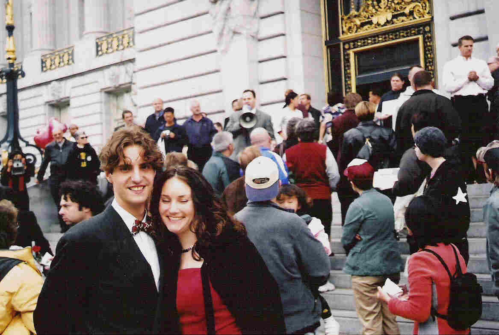

Our Song for Marriage Equality
 Back in 2004, Maryl and I were married in San Francisco and found ourselves
unexpectedly caught up in history.
Back in 2004, Maryl and I were married in San Francisco and found ourselves
unexpectedly caught up in history.
We'd never recorded a song before, but there's a first time
for everything ...
Click here to listen to the song!
Wed in San Francisco
Well we went down to San Francisco
Hoping that we wed would be.
There were sixteen hundred merry gay couples
My lass Maryl and me.
And we were waiting three long hours -
Some were waiting fifty years.
And the pressmen they were there with cameras
Show the world those happy tears!
But some they say this love's condemned
In a book about Jacob's Children fine
And he had two wives and a great great life
And a couple of slave girl concubines.
And some they claim it injures nature,
While their big cars burn the skies,
With your pizza box and your TV screen
While the good green earth around you dies.
And so it was with education,
Women's suffrage, slavery.
"Rights for us but not for others -
God and Nature both agree!"
*** Silly penny whistle fanfare solo verse ***

There were young and old and short and tall,
And folk of every race so fair,
And a love so true, and me and you
A privelege to be standing there.
So raise your voice in San Francisco,
Or wherever you may be -
Those who love has joined together
Ever will united be!
Dominic Widdows
The chords (C and G) are available upon request.
If you liked the song and feel moved to take action, please consider
the following actions:
- Forwarding this webpage to your friends.
- Sending us your comments and suggestions (maryldom at gmail
dot com) - they don't all have to be positive.
-
Read more, sign a petition, make a donation ...
e.g., at Human Rights Campaign http://www.hrc.org/
Raise your voice!
Back to puttypeg homepage